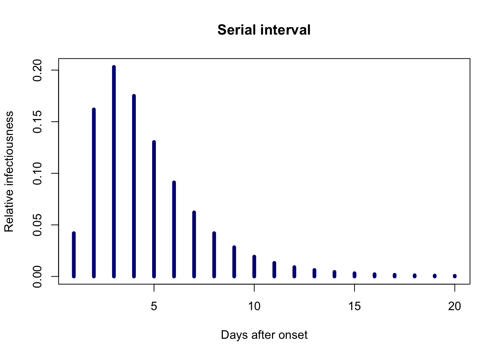
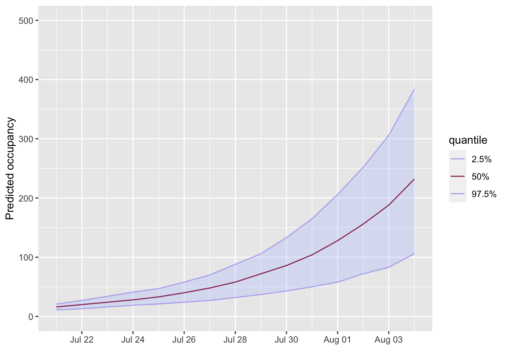

occupancy implements forecasting of daily bed occupancy using input data on both daily hospital admissions and the density distribution for the duration of stay. It aims to provide a reliable and standardised approach to forecasting that will help improve the quality and ease of provision of predictions.
occupancy contains three functions:
project_beds is the main function to compute projections of bed occupancy from admissions data and a length of stay distribution.build_projections is reexported from the projections package. It allows the user to build a object that can be fed to the project_beds function.incidence is reexported from the incidence package. Similarly to the build_projections function above, it allows the user to build a object that can be fed to project_beds.library(occupancy) library(ggplot2) # for plotting library(scales) # for plotting library(distcrete) # for disretisation
We consider two examples where we have hospital admission data and our goal is to predict bed occupancy for the following weeks. With both examples we will consider an outbreak in it’s early stages, where we anticipate exponential growth in the number of cases.
Both examples will use a Weibull distribution for length of stay and the distcrete package to discretise the distribution.
length_of_stay <- distcrete("weibull", shape = 1.1, scale = 7.4, w = 0.5, interval = 1)
In this example we assume the disease has a doubling time of 7 days and that there are initially 10 hospital admissions.
initial_admissions <- 10 # day one duration <- 14 # 14 days (2 weeks) duration growth_rate <- log(2) / 7 # doubling time of 7 days future_admissions <- round( initial_admissions * exp(growth_rate * (seq_len(duration)))) admissions <- incidence(rep(Sys.Date() + 0:14, c(initial_admissions, future_admissions))) # convert to a projections object to use with the project_beds function admissions <- build_projections( x = c(initial_admissions, future_admissions), dates = Sys.Date() + 0:14)
We now have all the variables we need to make our forecast of bed occupancy
projection <- project_beds(x = admissions, r_los = length_of_stay, n_sims = 10) plot(projection, quantiles = c(0.025, 0.5), ylab = "Predicted occupancy") + scale_x_date(breaks = breaks_pretty(10)) + ylim(0, 500) #> Scale for 'x' is already present. Adding another scale for 'x', which will #> replace the existing scale.
In this example we assume we have a weeks worth of admission data that, again, we want to forecast the next 14 days. This time, however, we would like to encorporate the serial-interval of the disease as well as an estimation of R0.
To start with we make up some toy admissions data and create a discretised serial interval. To give the example some some grounding in reality we use some reasearch from the recent COVID-19 pandemic. In a small study it was observed that a log-normal distribution provided a good fit for data that had an observed mean of 4.7 days and standard deviation of 2.9 days. In what follows we use a value of R0 = 2.5.
library(projections) # so we can use the `project` and subset functions # make some fake admissions data initial_admissions <- sample(Sys.Date() - 0:7, 30, replace = TRUE) initial_admissions <- incidence(initial_admissions) # observed study values need converting before use with R's log-normal function recorded_mean <- 4.7 recorded_sd <- 2.9 mu <- log(recorded_mean^2 / sqrt(recorded_mean^2 + recorded_sd^2)) sd <- sqrt(log(1 + recorded_sd^2 / recorded_mean^2)) # generate the discretised serial inteval serial_interval <- distcrete("lnorm", mu, sd, w = 0.5, interval = 1) plot(1:20, serial_interval$d(1:20), type = "h", lwd = 5, col = "navy", main = "Serial interval", xlab = "Days after onset", ylab = "Relative infectiousness")

# project future admissions future_admissions <- project(initial_admissions, R = c(2,2.5), si = serial_interval, n_days = 14, n_sim = 100) # combine the current and future admissions data original_admissions <- build_projections(initial_admissions$counts, initial_admissions$dates) admissions <- future_admissions + original_admissions
Now we can again make our forecasts
projections <- project_beds(x = admissions, r_los = length_of_stay, n_sims = 10) projections <- subset(projections, from = Sys.Date()) plot(projections, quantiles = c(0.025, 0.5), ylab = "Predicted occupancy") + scale_x_date(breaks = breaks_pretty(10)) + ylim(0, 500) #> Scale for 'x' is already present. Adding another scale for 'x', which will #> replace the existing scale.
